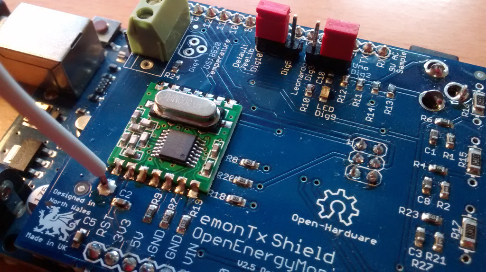

Hi all,
I already have a raspberry pi and an emonTH working just fine, logging temperature and humidity on the emoncms.org site.
I am now trying to set up a emontx shield V2 with RFM12b on an existing Arduino UNO R2, I've run the Shield_CT1234 sketch (among others).... which compiles fine and outputs OK to serial (i pick that up via usb on my PC).
The red LED on pin 9 is also blinking every 2 seconds... so that seems OK too...
However, I am not getting any readings on the raspberry pi, that is, nothing is showing up on the "inputs" of emoncms.org, except the emonTH inputs that were already working....
So : something is not working with the wireless transmitting...
I'm pretty bad at soldering, perhaps I did a rubbish job and something is not connected correctly on the RFM12b ? It was a lot smaller and more fiddly than I thought it would be!
I have not yet tried the basic "Tx_SimpleRFM12B_demo" sketch, not sure if that will help....
note: I accidentally soldered the CT jack sockets THE WRONG SIDE UP (yes I'm an ass), but I'm guessing/hoping this should not influence the RFM12b wireless transmissions.... and hopefully the WATT readings can just be multiplied by -1 on emoncms (if they ever get through...)
I hope someone has some input, thanks.
Regards
Lasse, Denmark
picture of shield on ardunio uno:
http://www.lassetobiasen.dk/images/DSC03933%20-%20shield%20on%20uno.JPG
{kind=link}
Re: emontx shield V2 with RFM12b on Arduino UNO R2 can't get signals to raspberry pi
Some of the soldering on one side isn't all it could be, and the other side is out of focus! However, as the sketch is running and it appears to be transmitting (it is not hanging), then we must check other things first.
Is it the sketch the correct frequency and group for your existing set-up? Is the RFM12B the correct frequency? (See http://openenergymonitor.org/emon/buildingblocks/rfm12b-wireless)
If all those are correct, then a careful look at the RFM12B connections with a magnifying lens would be the next move.
To solve your CT problem, if I read the drawings correctly, all you need to do is move one wire in the plug from the tip to the ring.
Re: emontx shield V2 with RFM12b on Arduino UNO R2 can't get signals to raspberry pi
Hi Robert,
Thank you for your kind input. I have tried to look at the solders on the RFM12 and this they seem ok but not great..
Yes, the RFM12B is at the correct frequency (433) and network (210)...
I tried running the "Tx_SimpleRFM12B_demo" sketch to try and further dig into the problem....
(https://raw.githubusercontent.com/openenergymonitor/RFM12B_Simple/master...)
I found this sketch to stop (hang) at the command.
rf12_sendNow(0, &emontx, sizeof emontx);
rf12_sendWait(2);
It works fine with these two lines commented out (although obviously nothing is sent via the RFM12B).
Is the "hang" useful in any way? Asides to hint that it's a hardware problem?
Maybe I should go through all the solders.... or perhaps a incorrect jumper setting on the UNO ?
Kind regards
Lasse
code:
//Simple RFM12B wireless demo - transimtter - no ack
//Glyn Hudson openenergymonitor.org GNU GPL V3 7/7/11
//Credit to JCW from Jeelabs.org for RFM12
#define RF69_COMPAT 0 // define this to use the RF69 driver i.s.o. RF12
#include <JeeLib.h> //from jeelabs.org
#define myNodeID 10 //node ID of tx (range 0-30)
#define network 210 //network group (can be in the range 1-250).
#define RF_freq RF12_433MHZ //Freq of RF12B can be RF12_433MHZ, RF12_868MHZ or RF12_915MHZ. Match freq to module
typedef struct { int power1, power2, power3, battery; } PayloadTX; // create structure - a neat way of packaging data for RF comms
PayloadTX emontx;
const int LED = 9; //emonTx Shield
void setup() {
rf12_initialize(myNodeID,RF_freq,network); //Initialize RFM12 with settings defined above
Serial.begin(9600);
Serial.println("RFM12B Transmitter - Simple demo");
Serial.print("Node: ");
Serial.print(myNodeID);
Serial.print(" Freq: ");
if (RF_freq == RF12_433MHZ) Serial.print("433Mhz");
if (RF_freq == RF12_868MHZ) Serial.print("868Mhz");
if (RF_freq == RF12_915MHZ) Serial.print("915Mhz");
Serial.print(" Network: ");
Serial.println(network);
pinMode(LED, OUTPUT);
//blink 2s to show we are starting
digitalWrite(LED, HIGH); delay(2000); digitalWrite(LED, LOW);
}
void loop() {
emontx.power1=emontx.power1+1;
emontx.power2=emontx.power2+2;
emontx.power3=emontx.power3+3;
emontx.battery=emontx.battery+4;
rf12_sendNow(0, &emontx, sizeof emontx);
rf12_sendWait(2);
Serial.print("power1: "); Serial.println(emontx.power1);
Serial.print("power2: "); Serial.println(emontx.power2);
Serial.print("power3: "); Serial.println(emontx.power3);
Serial.print("battery: "); Serial.println(emontx.battery);
Serial.println(" ");
digitalWrite(LED, HIGH); delay(500); digitalWrite(LED, LOW);
delay(2000);
}
Re: emontx shield V2 with RFM12b on Arduino UNO R2 can't get signals to raspberry pi
A 'hang' is a good indication that the RFM12B is not responding to the library and the function is not returning. Check your jumper settings and your soldering. Failing that, it might be a faulty RFM12B but most problems with it have turned out to be soldering (look for whiskers as well as bad joints). It might also be a repeat of the problem we saw a few days ago where it needed the interrupt changing in both hardware and software to work (see http://openenergymonitor.org/emon/node/5908). If everything else looks good, try that.
(Not all the pads on the RFM12B are used - check the Wiki and the Eagle CAD files to see which you need to pay attention to.)
Re: emontx shield V2 with RFM12b on Arduino UNO R2 can't get signals to raspberry pi
Hi Robert,
I've re-checked the solders (getting slightly better at it now) and also -- like the fellow in node 5908 -- changed the SS to pin 5, with the option 2 (as per http://wiki.openenergymonitor.org/index.php?title=EmonTx_Arduino_Shield if anyone else is reading)
That seemed to solve the problem and the RFM12B is now transmitter to my base, and on to emoncms. (I'm quite surprised how much the soldering quality makes a difference!).
in any case thank you for your help :-)
Now I'll try and solve my CT problem, moving the wire in the plug as you suggest.
Kind regards
Lasse
Re: emontx shield V2 with RFM12b on Arduino UNO R2 can't get signals to raspberry pi
@lassetobiasen, did you need to make the change to RF12.cpp too? It looks like dig 10 does not work on my UNO here either, not sure how I missed that. It worked for me with set_cs set to 5 + the modification to RF12.cpp.
Re: emontx shield V2 with RFM12b on Arduino UNO R2 can't get signals to raspberry pi
Sorry, not sure what I did there, it is working fine for me now on dig 10 with no modifications to RF12.cpp and standard firmware.
I have the jumper on Dig10 as so:

Re: emontx shield V2 with RFM12b on Arduino UNO R2 can't get signals to raspberry pi
Trystan,
Thanks for replying: yes, I made the RF12.cpp changes when using dig 5... that made it work!
That being said, my soldering is generally not up to scratch which may be the reason dig 10 was not working.....
Now Im trying to make the CT connector work: I soldered the socket wrong way up.... :-(
I'll post some details on that later; Robert suggested I made changes to the plug....
Kind regards from rainy Denmark
Re: emontx shield V2 with RFM12b on Arduino UNO R2 can't get signals to raspberry pi
Hi Robert,
Not sure if you are still reading this thread - I am having some problems with the CT connectors soldered "upside down" as i wrote earlier.
(see http://www.lassetobiasen.dk/images/DSC03933%20-%20shield%20on%20uno.JPG)
You mentioned that I could try and switch the tip and ring wires (white and red), i have done this - result can be seen on this picture:
http://www.lassetobiasen.dk/images/2014_10_16_plug_wire_change.JPG
However, my power readings when connecting to the uno+emonTX sheild do not seem right... I definitely get a reading (checked all 4 connectors, all give the same type of readings)... The approximate power consumption is about 200-300W (a playstation, a small TV and two lamps)... but the reading from the CT is only 0-20 Watts...
The CT is connected around only one lead (the phase line) not both, so I think that part is OK. I am also getting fine voltage readings: about 280V
Are the readings from the CT actually in tens of watts (so I multiply the reading by 10) ? That would give a roughly correct reading...
Or perhaps something else is wrong?
Thank you for your input, and your time - that's really great you're helping. I may also try to post this separately
Kind regards from Denmark
Lasse
Sketch used : Shield_CT1234_Voltage
------------------------------------
/*
emonTx Shield 4 x CT + Voltage example
An example sketch for the emontx Arduino shield module for
CT and AC voltage sample electricity monitoring. Enables real power and Vrms calculations.
Part of the openenergymonitor.org project
Licence: GNU GPL V3
Authors: Glyn Hudson, Trystan Lea
Builds upon JeeLabs RF12 library and Arduino
emonTx documentation: http://openenergymonitor.org/emon/modules/emontxshield/
emonTx firmware code explination: http://openenergymonitor.org/emon/modules/emontx/firmware
emonTx calibration instructions: http://openenergymonitor.org/emon/modules/emontx/firmware/calibration
THIS SKETCH REQUIRES:
Libraries in the standard arduino libraries folder:
- JeeLib https://github.com/jcw/jeelib
- EmonLib https://github.com/openenergymonitor/EmonLib.git
Other files in project directory (should appear in the arduino tabs above)
- emontx_lib.ino
*/
/*Recommended node ID allocation
------------------------------------------------------------------------------------------------------------
-ID- -Node Type-
0 - Special allocation in JeeLib RFM12 driver - reserved for OOK use
1-4 - Control nodes
5-10 - Energy monitoring nodes
11-14 --Un-assigned --
15-16 - Base Station & logging nodes
17-30 - Environmental sensing nodes (temperature humidity etc.)
31 - Special allocation in JeeLib RFM12 driver - Node31 can communicate with nodes on any network group
-------------------------------------------------------------------------------------------------------------
*/
#define FILTERSETTLETIME 5000 // Time (ms) to allow the filters to settle before sending data
const int CT1 = 1;
const int CT2 = 1; // Set to 0 to disable
const int CT3 = 1;
const int CT4 = 1;
#define RF_freq RF12_433MHZ // Frequency of RF12B module can be RF12_433MHZ, RF12_868MHZ or RF12_915MHZ. You should use the one matching the module you have.
const int nodeID = 10; // emonTx RFM12B node ID
const int networkGroup = 210; // emonTx RFM12B wireless network group - needs to be same as emonBase and emonGLCD
#define RF69_COMPAT 0 // set to 1 to use RFM69CW
#include // make sure V12 (latest) is used if using RFM69CW
#include "EmonLib.h"
EnergyMonitor ct1,ct2,ct3, ct4; // Create instances for each CT channel
typedef struct { int power1, power2, power3, power4, Vrms;} PayloadTX; // create structure - a neat way of packaging data for RF comms
PayloadTX emontx;
const int LEDpin = 9; // On-board emonTx LED
boolean settled = false;
void setup()
{
Serial.begin(9600);
//while (!Serial) {
; // wait for serial port to connect. Needed for Leonardo only
Serial.println("emonTX Shield CT123 Voltage example");
Serial.println("OpenEnergyMonitor.org");
Serial.print("Node: ");
Serial.print(nodeID);
Serial.print(" Freq: ");
if (RF_freq == RF12_433MHZ) Serial.print("433Mhz");
if (RF_freq == RF12_868MHZ) Serial.print("868Mhz");
if (RF_freq == RF12_915MHZ) Serial.print("915Mhz");
Serial.print(" Network: ");
Serial.println(networkGroup);
// }
if (CT1) ct1.current(1, 60.606); // Setup emonTX CT channel (ADC input, calibration)
if (CT2) ct2.current(2, 60.606); // Calibration factor = CT ratio / burden resistance
if (CT3) ct3.current(3, 60.606); // emonTx Shield Calibration factor = (100A / 0.05A) / 33 Ohms
if (CT4) ct4.current(4, 60.606);
if (CT1) ct1.voltage(0, 300.6, 1.7); // ct.voltageTX(ADC input, calibration, phase_shift) - make sure to select correct calibration for AC-AC adapter http://openenergymonitor.org/emon/modules/emontx/firmware/calibration. Default set for Ideal Power adapter
if (CT2) ct2.voltage(0, 300.6, 1.7);
if (CT3) ct3.voltage(0, 300.6, 1.7);
if (CT4) ct4.voltage(0, 300.6, 1.7);
rf12_set_cs(5); //set RFM SS pin 5, according to option 2 http://wiki.openenergymonitor.org/index.php?title=EmonTx_Arduino_Shield
rf12_initialize(nodeID, RF_freq, networkGroup); // initialize RFM12B
rf12_sleep(RF12_SLEEP);
pinMode(LEDpin, OUTPUT); // Setup indicator LED
digitalWrite(LEDpin, HIGH);
}
void loop()
{
if (CT1) {
ct1.calcVI(20,2000); // Calculate all. No.of crossings, time-out
emontx.power1 = ct1.realPower;
Serial.print(emontx.power1);
}
emontx.Vrms = ct1.Vrms*100; // AC Mains rms voltage
if (CT2) {
ct2.calcVI(20,2000); // Calculate all. No.of crossings, time-out
emontx.power2 = ct2.realPower;
Serial.print(" "); Serial.print(emontx.power2);
}
if (CT3) {
ct3.calcVI(20,2000); // Calculate all. No.of crossings, time-out
emontx.power3 = ct3.realPower;
Serial.print(" "); Serial.print(emontx.power3);
}
if (CT4) {
ct4.calcVI(20,2000); // Calculate all. No.of crossings, time-out
emontx.power4 = ct4.realPower;
Serial.print(" "); Serial.print(emontx.power4);
}
Serial.print(" "); Serial.print(ct1.Vrms);
Serial.println(); delay(100);
// because millis() returns to zero after 50 days !
if (!settled && millis() > FILTERSETTLETIME) settled = true;
if (settled) // send data only after filters have settled
{
send_rf_data(); // *SEND RF DATA* - see emontx_lib
digitalWrite(LEDpin, HIGH); delay(2); digitalWrite(LEDpin, LOW); // flash LED
delay(2000); // delay between readings in ms
}
}
Re: emontx shield V2 with RFM12b on Arduino UNO R2 can't get signals to raspberry pi
Yes, I'm still here (at 00:49 local time!).
Looking at the PCB layout and circuit diagram on Solderpad, it looked to me as if the jack socket was symmetrical, the sleeve connection in the middle (the axis of symmetry), the tip and ring connections on the outside and the 'break' connections for those on the inside. Therefore, if the socket is in the wrong side of the PCB, you should be able to swap tip and ring inside the plug and have a connection. But you need to check with a multimeter. With a plug in, the sleeve should go to the ADC connector on the Arduino, and the ring (now) - to the +ve end of the capacitor. The CT resistance is about 100 Ohms in parallel with the burden resistor (33 Ohms). The 'break' contact is earthed with the plug out so that the sketch can detect the presence of a plug, although it doesn't actually do that.
Your sketch looks OK, the numbers look correct. The output values are Watts, not tens. So maybe there is something else that you need to find. Your post and your picture tell me what is wrong: you have mis-identified the connections in the plug. You still have the CT connected to tip and sleeve! Look here http://openenergymonitor.org/emon/buildingblocks/DS18B20-temperature-sen... for a picture with the connections labelled. The red and white wires need to connect to ring and sleeve - move the red wire onto the unused tag. When you do that, (if I'm right) it should come good.
Re: emontx shield V2 with RFM12b on Arduino UNO R2 can't get signals to raspberry pi
Hi Robert,
OK - thanks for getting me up to speed on the jack socket (I feel like a school kid again ;-) ), I re-did the soldering and moved the the red wire... now I'm getting pretty good watt readings off the CT... They are not great (off by 20-40%) but I think this will get better once update the calibration figures... A 41W LED was reading about 60W and a 11W bulb was reading about 18W... So error seems to be proportional to the reading... My voltage reading was 280V, this should be more like 240V, that would also mislead the W measurement I guess...
Anyway, Robert, a new problem has turned up! I also attached a DS18B20 sensor to move ahead with temperature measurement (I did a fair bit of monitoring of radiator water temperatures in my old house, so know the DS18B20 relatively well).
However, the sketch can't seem to find my sensor....
Do you have any ideas what I am doing wrong? I have run the sketch with no other plugs in the sheild (see picture) just to make sure there were no interferences...
Perhaps I should check the soldering on PIN4, and check the voltage on the DS18B20 VDD ?
Many regards,
Lasse
Serial output:
emonTX Shield CT123 Voltage example
OpenEnergyMonitor.org
Node: 10 Freq: 433Mhz Network: 210
Locating devices...Found 0 devices.
Parasite power is: OFF
(and so on...)
Sketch - now with added temperature measurement:
#define FILTERSETTLETIME 5000 // Time (ms) to allow the filters to settle before sending data
const int CT1 = 1;
const int CT2 = 1; // Set to 0 to disable
const int CT3 = 1;
const int CT4 = 1;
#define RF_freq RF12_433MHZ // Frequency of RF12B module can be RF12_433MHZ, RF12_868MHZ or RF12_915MHZ. You should use the one matching the module you have.
const int nodeID = 10; // emonTx RFM12B node ID
const int networkGroup = 210; // emonTx RFM12B wireless network group - needs to be same as emonBase and emonGLCD
#define RF69_COMPAT 0 // set to 1 to use RFM69CW
#include <JeeLib.h> // make sure V12 (latest) is used if using RFM69CW
#include "EmonLib.h"
EnergyMonitor ct1,ct2,ct3, ct4; // Create instances for each CT channel
//------- temperature stuff --------------
#include <OneWire.h>
#include <DallasTemperature.h>
#define ONE_WIRE_BUS 4 // Data wire
OneWire oneWire(ONE_WIRE_BUS); // Setup a oneWire instance to communicate with any OneWire devices (not just Maxim/Dallas temperature ICs)
DallasTemperature sensors(&oneWire); // Pass our oneWire reference to Dallas Temperature.
DeviceAddress address_T1 = { 0x00, 0x00, 0x00, 0x00, 0x00, 0x00, 0x00, 0x00 }; //The DS address is not needed, on startup it will detect the first sensor
int numberOfDevices=0;
//-----------------------------------------
typedef struct { int power1, power2, power3, power4, Vrms, T1;} PayloadTX; // create structure - a neat way of packaging data for RF comms
PayloadTX emontx;
const int LEDpin = 9; // On-board emonTx LED
boolean settled = false;
void setup()
{
Serial.begin(9600);
//while (!Serial) {
; // wait for serial port to connect. Needed for Leonardo only
Serial.println("emonTX Shield CT123 Voltage example");
Serial.println("OpenEnergyMonitor.org");
Serial.print("Node: ");
Serial.print(nodeID);
Serial.print(" Freq: ");
if (RF_freq == RF12_433MHZ) Serial.print("433Mhz");
if (RF_freq == RF12_868MHZ) Serial.print("868Mhz");
if (RF_freq == RF12_915MHZ) Serial.print("915Mhz");
Serial.print(" Network: ");
Serial.println(networkGroup);
// }
if (CT1) ct1.current(1, 60.606); // Setup emonTX CT channel (ADC input, calibration)
if (CT2) ct2.current(2, 60.606); // Calibration factor = CT ratio / burden resistance
if (CT3) ct3.current(3, 60.606); // emonTx Shield Calibration factor = (100A / 0.05A) / 33 Ohms
if (CT4) ct4.current(4, 60.606);
if (CT1) ct1.voltage(0, 300.6, 1.7); // ct.voltageTX(ADC input, calibration, phase_shift) - make sure to select correct calibration for AC-AC adapter http://openenergymonitor.org/emon/modules/emontx/firmware/calibration. Default set for Ideal Power adapter
if (CT2) ct2.voltage(0, 300.6, 1.7);
if (CT3) ct3.voltage(0, 300.6, 1.7);
if (CT4) ct4.voltage(0, 300.6, 1.7);
rf12_set_cs(5); //set RFM SS pin 5, according to option 2 http://wiki.openenergymonitor.org/index.php?title=EmonTx_Arduino_Shield
rf12_initialize(nodeID, RF_freq, networkGroup); // initialize RFM12B
rf12_sleep(RF12_SLEEP);
pinMode(LEDpin, OUTPUT); // Setup indicator LED
digitalWrite(LEDpin, HIGH);
//setup temperature
sensors.begin(); //temperature init
delay(200);
//obtain #1 sensor
numberOfDevices = sensors.getDeviceCount();
if (numberOfDevices != 0){
sensors.getAddress(address_T1, 0); //get the address of the first detected sensor
}
// locate devices on the bus
Serial.print("Locating devices...");
Serial.print("Found ");
Serial.print(numberOfDevices, DEC);
Serial.println(" devices.");
// report parasite power requirements
Serial.print("Parasite power is: ");
if (sensors.isParasitePowerMode()) Serial.println("ON");
else Serial.println("OFF");
}
void loop()
{
if (CT1) {
ct1.calcVI(20,2000); // Calculate all. No.of crossings, time-out
emontx.power1 = ct1.realPower;
Serial.print(emontx.power1);
}
emontx.Vrms = ct1.Vrms*100; // AC Mains rms voltage
if (CT2) {
ct2.calcVI(20,2000); // Calculate all. No.of crossings, time-out
emontx.power2 = ct2.realPower;
Serial.print(" "); Serial.print(emontx.power2);
}
if (CT3) {
ct3.calcVI(20,2000); // Calculate all. No.of crossings, time-out
emontx.power3 = ct3.realPower;
Serial.print(" "); Serial.print(emontx.power3);
}
if (CT4) {
ct4.calcVI(20,2000); // Calculate all. No.of crossings, time-out
emontx.power4 = ct4.realPower;
Serial.print(" "); Serial.print(emontx.power4);
}
Serial.print(" "); Serial.print(ct1.Vrms);
if (numberOfDevices != 0){
emontx.T1 = (sensors.getTempC(address_T1) * 100); // Temperature on Celcius multiplied by 100
Serial.print(" "); Serial.print(emontx.T1);
} else {
emontx.T1 = -99.0 * 100; // Temperature -99 on error
}
Serial.print(" "); Serial.print(emontx.T1);
Serial.println(); delay(100);
// because millis() returns to zero after 50 days !
if (!settled && millis() > FILTERSETTLETIME) settled = true;
if (settled) // send data only after filters have settled
{
send_rf_data(); // *SEND RF DATA* - see emontx_lib
digitalWrite(LEDpin, HIGH); delay(2); digitalWrite(LEDpin, LOW); // flash LED
delay(2000); // delay between readings in ms
}
}
Re: emontx shield V2 with RFM12b on Arduino UNO R2 can't get signals to raspberry pi
The easy one first: you do need to adjust the voltage calibration. It should not be that far out if you are using the recommended ac adapter, but if you are using something else, then calibration is necessary.
Second, the current input is good to 100 A, that's 24 kW, so you must not expect accurate values below about 1% (1 A, 240 W). There's a page in Building Blocks about what happens at very low currents.
I don't have an Arduino or a shield, so you have to follow basic principles. Are the actual legs on the DS18B20 getting +5 V & GND? If you have an oscilloscope, can you see anything on the bus? (Even a multimeter might show if something is happening.) Is DIO 4 used for anything else on your Arduino?
Re: emontx shield V2 with RFM12b on Arduino UNO R2 can't get signals to raspberry pi
The issue with the DS18B20 has been solved, I had apparently forgotten the "sensors.requestTemperatures();" command in my sketch.... (sorry, stupid mistake! Perhaps it would be help if there was a CT1234_Voltage_temp sketch also for the emonTX shield? https://github.com/openenergymonitor/emonTxFirmware/tree/master/emonTxShield).
To test the hardware setup I detached the shield from the uno in a simple setup as shown on the picture below - this made it possible to reuse some old temperature sketches I had, and at the end of the day solve the problem.
Thanks for your input.
Kind regards
Lasse